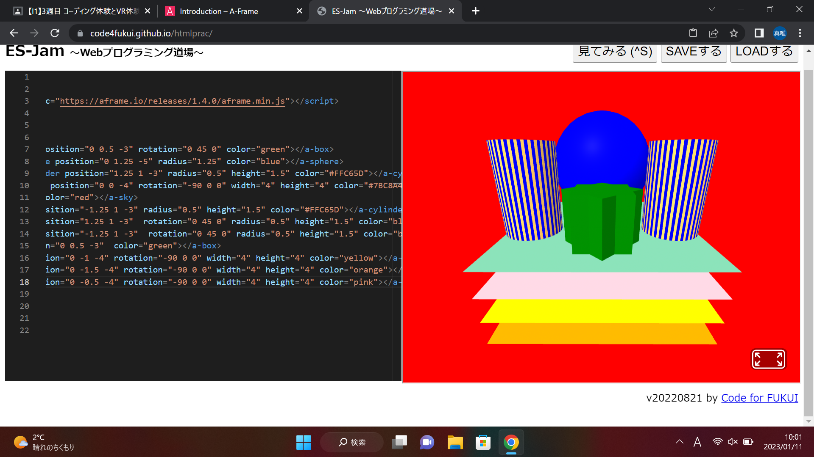
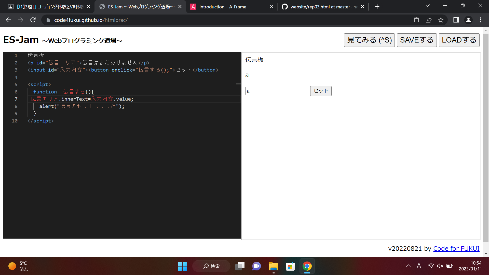

第3週目
3-1 JavaScript体験：VR空間を作る

三次元モデル
1.内容
ES-Jam~Webプログラミング道場を使って、コードに場所、角度、色などの作りたいものに関する情報を入れながら、自分の作りたい図面を作成した。また、作るとき、最初から作られていたコードをコピーしたりして、数字を打ち込んだりして、作成した。
2.感想
思っていたより意外と難しかった。前期の時にやったiコースの実験実習と違って、全部コードで表すというのが、色とか数値とかを打ち込んで、本当に作りたいものを正確に作れるのはいいと思ったけど、その技術を手に入れるために相当時間がかかりそうだなと思った。
3-2 JavaScript体験：伝言プログラムを作る

1.内容
プリントを見ながら、プログラムによって作られた入力欄に打ち込んだ文字が上の部分に反映されるコードを打ち込んだ。
2.感想
最初、プリントに書かれたことを理解して打ち込んだらいいだけだと思っていたが、実際、プログラムに書いたことを実行してみたら、ちょっとしたアルファベットの間違いでプログラムが実行されなかったりして、本当に繊細な世界なんだなと思った。
3-3 JavaScriptプログラムの３次元空間の体験
1.内容
ないようないよう
2.感想
かんそうかんそう